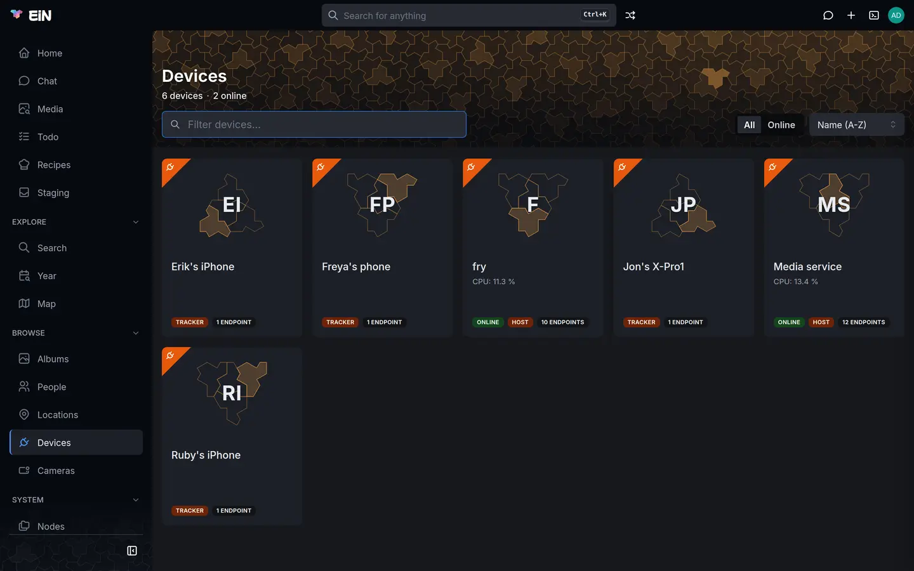

A device is a camera, phone, scanner, camcorder or GPS tracker that took pictures or recorded routes for your archive. This page is for family members and administrators who register devices, say who owned them, set their clocks right and bring in GPS tracks.
What registering a device gives you
EiN reads the camera's name out of every picture, but until the camera is registered as a device that is all it knows: the viewer shows the make and model the file names, and nothing else. Once a device is registered, the pictures it took are linked to it, and:
- the viewer's camera line names the device, links to its page and says who owned it (see The details panel);
- the device's page gathers everything it took, who owned it and when, and the route it recorded;
- an album's Info tab lists the devices that took its pictures, and its Map tab draws their routes (see Albums), and the Search page finds devices and narrows albums by them (see Search and the finder);
- the device's Timezone, Scanner or digitizer and Video times in UTC settings correct the dates of every picture it took;
- the GPS route it recorded, its track, is drawn on the maps.
How EiN recognises a device
When a file arrives, EiN reads what the camera wrote into it: the make (the EXIF tag Make), the
model (Model) and, when the camera writes one, its serial number (SerialNumber,
InternalSerialNumber or DeviceSerialNo). Some camcorders write the make and model as
DeviceManufacturer and DeviceModelName instead. These three together are the file's
fingerprint, and EiN looks for the registered device that has the same one:
- a device with the same serial number;
- otherwise, a device with the same make and the same model.
The device's name plays no part. The make and model are compared exactly as the camera writes
them, so a device registered with the make Nikon does not match files that say
NIKON CORPORATION.
EiN does this when it first reads the file, when you register the device and when you change its make, model or serial number: registering a camera, or giving it a new fingerprint, links the files already in the archive that carry it. Link existing media on its page looks again for any it missed (see Link the files a device missed).
Two things a fingerprint cannot do:
- Tell two phones of the same model apart. A serial number identifies one camera body; a make and model identify only a model line, and most phones write no serial number. If two people in the family have the same phone model, EiN cannot tell their pictures apart, and all of them are linked to one of the two devices.
- Match a file that names no camera. Many messaging apps remove the make and model from the pictures they send, and a file without them matches nothing. You can link such files by hand in the terminal (see From the terminal).
A device's fingerprint has nothing to do with the fingerprints EiN takes of the pictures themselves to find copies; those are described in Duplicates.
The Devices page
Open Devices in the sidebar, under Browse.


- The header counts the registered devices (13 devices). The filter box (Filter devices…) matches the name, make, model and serial number as you type.
- Show switches between Registered (N) and Unregistered, the cameras EiN has seen in the pictures that match no registered device.
- Sort offers Name (A-Z) (the default), Name (Z-A) and Make / model. Your choice is remembered in this browser. It has no effect on the unregistered list.
- Each card shows the device's cover, its name, its description or else its make and model, and badges: the serial number, the time zone, scanner and video UTC. Click a card to open the device's page.
When nothing is registered yet, the page says No devices registered yet: "The cameras and phones that took the pictures. Unregistered lists the ones the archive has already seen." with Show unregistered and, when you are signed in, New device.
Register a camera EiN has already seen
The quickest way to register a camera is from the pictures it took.
- On the Devices page, choose Show → Unregistered. The first time in a visit, EiN looks through the files it has read for cameras that match nothing registered. The list reads: "Cameras found in the indexed media that match nothing in the registry. Registering one lets its photos be linked to it, and its timezone and owners apply."
- Find the camera. Each card shows a suggested name (the model, with the make in front when the
model does not start with it, such as
Canon EOS 7DorPanasonic DMC-TZ1), the make and model, the serial number when there is one, and how many files it took (N files). The cameras with the most files come first. - Click Register on its card. The Register Device dialog opens with Name, Make, Model and Serial number filled in from the files.
- Change Name to what the family calls the camera, such as
David's 7D. Leave Make, Model and Serial number as they are: they are what the files are matched on. - Under Timezone, choose the time zone its clock was set to, and turn on Scanner or digitizer or Video times in UTC if they apply (see Clocks, time zones and scanners).
- Click Register. The files the camera took are linked to it and dated by its settings, and the device's page opens. For a camera known only by its make and model this can take minutes in a large archive.
Rescan at the top of the unregistered list looks again, for instance after a large import. When every camera is registered, the list says "Every camera the media names is registered (N files matched)." With many unknown cameras it shows the most used ones and says "Only the most-used cameras are listed; there are more."
When a card says "registered as …, but unmatchable"
Sometimes a device with the camera's name already exists, but without the make, model or serial number its files carry, so nothing is matched to it. Its card then has the badge registered as <name>, but unmatchable and the button Add fingerprint instead of Register, because registering would make a second copy of a camera EiN already knows.
Click Add fingerprint. EiN writes the make, model and serial number from the card into the existing device and links the files they identify. When it is done, a message says "Linked N files to <name>." or "<name> now carries the fingerprint, but no unclaimed files matched it." This is quick for a camera with a serial number and slow for one known only by its make and model, which can take minutes in a large archive.
The button is there only if you may change that device; otherwise the card has no button.
Register a device by hand
Register a device by hand when EiN has not seen it in any picture yet: a GPS tracker, a scanner before the scans arrive, or a camera whose files you are about to import.
- Open the Create menu (the plus in the top bar) and choose Device, or click New device on an empty Devices page. The Register Device dialog opens.
- Fill in the fields below. Only Name is required.
- Click Register. The device's page opens. With a serial number, or both a make and a model, the files already in the archive that carry them are linked to it first.
| Field | What to enter |
|---|---|
| Name | What the family calls it, such as Helen's scanner. The name also gives the device's folder in the tree, so two devices cannot have the same name. |
| Make | "As the camera writes it in exif: what files are matched on." For example Canon. |
| Model | "As the camera writes it in exif." For example Canon EOS 5D Mark III. |
| Serial number | "Tells one body apart, where make and model tell only the model." Optional. |
| Timezone | "The zone its clock was set to." Optional. |
| Scanner or digitizer | "Its EXIF device dates describe digitisation, not when the photograph was taken." |
| Video times in UTC | "Its videos keep their recording time in UTC, as phones do." |
To copy the make and model exactly, open a picture the camera took in the viewer and open
Details at the foot of the details panel. Among the EXIF tags it lists are Make, Model and,
when the camera writes one, SerialNumber (see The Details section).
A device without a serial number and without both a make and a model is never matched to any file.
Its page says so: "No serial and no make/model — nothing is matched to this device automatically;
device-link --device links files to it by hand."
Anyone signed in can register a device. Changing it afterwards, with the buttons this page describes, is offered to whoever may change it, which the device's Share dialog shows and sets (see Sharing).
A device's page
Click a card on the Devices page, or the device's name in the viewer. The page's address is
/devices/ and the device's folder name, such as /devices/Jons_eTrex, and a tab other than
Info adds ?tab= with the tab's name, such as ?tab=track.
Under the name, the header shows the current owners (up to three, then "and N more"), how many files the device took and in which years, such as 75 files · 2025–2026 (N+ files when counting stopped at its limit), and the device's labels. For those who may change the device, the corner has Share and Edit, and the ⋮ menu has Add event and Move to trash. A device whose Travels as is set also has Upload GPX in the corner and Live tracking under ⋮ (see Upload a GPX file to a device's track and Live tracking from a phone). On a phone they are all under ⋮.
| Tab | What it shows |
|---|---|
| Info | The page opens here: the device's timeline, and beside it its settings, owners, home bases and description (see below). |
| Media | Every file linked to the device, by date. Select pictures to act on them from the selection bar, for example Add to album or Set time (see The selection bar). |
| Track | The route the device recorded (see A device's track). |
| Trips | The trips found in that route, newest first (see A device's trips). |
Track and Trips are there only for a device that travels: one whose Travels as is set (see How a device travels), or one that has recorded a track. A camera or a scanner has neither.
On the Info tab, the timeline on the left is the device's history: when each owner started and stopped using it, the events written on it, and the albums holding pictures it took. When it has none, it says "Nothing recorded for <device> yet. Owners with dates, and albums with photos it took, appear on its timeline." On the right, and above the timeline on a phone:
- Device lists Make, Model, Serial number, Timezone, Travels as, "Capture dates: Scanner dates suppressed" for a scanner and "Video times: UTC"; with nothing but a name it says "Nothing recorded beyond the name." Under them is Link existing media (see Link the files a device missed).
- Owners lists everyone who has owned it, with the dates (see Say who owned a device).
- Home bases, for a device that travels (see Home bases).
- About shows the description, when there is one.
The Media tab is the place to correct a camera whose clock was wrong: select its pictures and use Set time, as Dates and places of pictures describes.
Move to trash sends the device to your trash, and the message's Undo brings it back (see Your profile, favourites and trash).
Link the files a device missed
Files are linked to their device when EiN first reads them, when the device is registered and when its make, model or serial number is changed. A file can still miss its device, such as one that was read while linking was not running.
- Open the device's page. The Info tab opens.
- Click Link existing media under Device. The text under it explains: "Files are linked to their device when they are indexed, when it is registered and when its make, model or serial number is changed. This looks again for the files that carry its fingerprint and are linked to no device, such as one indexed while linking was not running."
- Wait for the message, such as "Linked 412 files and updated dates on 37.", or "Nothing new to link or update — every matching file already has this device policy."
Linking also dates the files again by the device's settings, which is what "updated dates" counts. Files that are already linked to another device are left with it.
The button is shown only to those who may change the device, and only when the device has a serial number or both a make and a model. A device with a serial number is linked quickly; one known only by its make and model can take minutes in a large archive.
Change a device's settings
- On the device's page, click Edit. The Edit device dialog opens.
- Change what you need: Name, Make, Model, Serial number, Timezone (a list of
time zones you can type in, such as
Pacific/Auckland), Travels as (see How a device travels), Scanner or digitizer, Video times in UTC, Description and Labels. - Click Save.
A changed Timezone, Scanner or digitizer or Video times in UTC re-dates every file already linked to the device, and the page says "Re-dated N linked files.", or "Removed scanner dates from N linked files." when you turned the scanner setting on.
A changed Make, Model or Serial number links the files already in the archive that carry the new fingerprint and are linked to no other device, and the page says "Linked N files.", or "Linked N files and updated dates on M." when linking also re-dated files of the device. A device with a serial number is linked quickly; one known only by its make and model can take minutes in a large archive, and Save waits for it. Files linked under the old fingerprint stay linked.
Clocks, time zones and scanners
Three settings tell EiN how to read a device's dates. Each one applies to every file linked to the device, and changing it re-dates them.
- Timezone: the time zone the camera's clock was set to. A camera's clock writes a time without
a zone, and EiN reads it in this zone, with the summer time of the year the picture was taken.
A zone the camera wrote into the file itself comes first. Without a Timezone, EiN uses the
archive's own time zone. Set it for a camera bought abroad, or one left on home time during a
trip: Helen's Coolpix stayed on London time when she took it to Wellington, and with its
Timezone set to
Europe/London, EiN reads its clock as London time and gets the moment of each picture right. - Scanner or digitizer: the device's clock records when a file was scanned, not when the photograph was taken, so EiN does not date pictures by it. Pictures with no other date stay undated until someone gives them one. Files brought in through a staging category of the kind Scans are treated as scans whatever device made them; this setting matters for scans uploaded straight into an album, copied in over SFTP, or already in the library.
- Video times in UTC: phones keep their videos' recording time in UTC. Turn this on for a phone whose videos come out off by its time zone.
Dates and places of pictures explains how EiN chooses a picture's date and time zone, and Date scans of old prints and slides how scans are dated.
Say who owned a device
A device can have several owners over the years. The viewer lists them under the camera's name, each with the dates, such as Owned by Ruby Wrenfield (2023–), so you can tell whose camera it was when a picture was taken.
- Open the device's page. Owners is on the right of the Info tab, the tab it opens on.
- Click Add owner beside the heading.
- Under Person, choose the person.
- Fill in From and To as a year, a month or a day:
2005,2005-06or2005-06-20. Leave To empty while they still own it, and leave both empty if you do not know the dates. - Click Add owner.
The list shows the current owners first, then the earlier ones, with their dates: "2019 – 2023", "since 2019", "until 2023", or "dates unknown". A current owner with a start date has the badge current. Use the pencil beside an owner to change the dates (Save changes), and the bin to remove them; EiN asks "Remove <person> as an owner of <device>?" before it does.
An owner without a To date counts as a current owner, in the page's header and under Owners. Dated ownership appears on the device's timeline, on the Info tab, as "<person> started using <device>" and "<person> stopped using <device>". A date that is not a year, month or day is refused with a message ending in "is not a date (YYYY[-MM[-DD]])".
How a device travels
A device that records a track moves as a boat, a car, a bike or on foot. Its Travels as setting, Boat, Car, Bike or On foot, says which, and so which units its track is shown in: a boat's distances in nautical miles and its speeds in knots, everyone else's in kilometres and km/h. It also says what lying still looks like when the track is drawn (see A device's track): a boat lies still within 80 m for 15 minutes, a car or a bike within 50 or 30 m for 10 minutes, someone on foot within 25 m; and a jump faster than 50 knots, 250, 100 or 40 km/h is a GPS error. A device without the setting is shown as a car. Set it in the Edit device dialog (see Change a device's settings); a phone carried on a sailing holiday is best left as it is, and a tracker that stays on the boat set to Boat. Setting it gives the device its Track and Trips tabs, and its Home bases; a device without it has them once it has recorded a track.
Home bases
A device's home bases are the places it belongs: the boat's home berth and winter yard, the house where the car is parked. Arriving at one ends a trip. Home bases on the Info tab of a device that travels lists them, each linking to its location.
- Click Add home base, choose a location in the list, and click Add. A place that is not a location yet is added on the Locations page first (see Locations and the map).
- Click the cross beside a home base to remove it.
While a device has no home bases of its own, its owners' homes count instead: each place an owner lived while they owned the device, for the years both are true (see Say who owned a device and Homes and residents). It then says "None set, so its owners' homes count:" and lists them with those years, such as "2010 – 2020". As soon as the device has one home base of its own, the owners' homes no longer count.
Adding and removing are offered to those who may change the device.
Write something on a device's timeline
To keep a story with a device, such as where it was bought or when it broke, add an event:
- On the device's page, open the ⋮ menu and choose Add event.
- Fill in Date (such as
2005-06-15) and Description ("What happened"). Both are needed. Written by is you unless you choose someone else. - Click Add event.
The event appears on the device's timeline, on its Info tab. Events are described in full in Family tree, events and homes.
The device's cover
The picture on a device's card and behind its page's header is its cover: the newest picture linked to it, by the date it was taken. The cover moves on by itself as newer pictures are linked. A device that took only videos, such as a camcorder, gets the poster frame of its newest video once that video has been processed; recordings are never used. The card of a device with no pictures shows a placeholder with its initials.
The Web UI has no button to choose a device's cover. In the terminal you can link a picture
as the device's coverPhoto yourself, and a cover chosen this way is kept. In the demo, Ruby's
iPhone is the folder /archive/devices/ruby-iphone:
# in EiN's terminal
ln -sf /archive/albums/wellington-christmas-2025/IMG_0650.HEIC /archive/devices/ruby-iphone/coverPhotoTo go back to the automatic cover, remove the link with rm /archive/devices/ruby-iphone/coverPhoto
and run device-cover /archive/devices/ruby-iphone.
A device's track
The route a GPS-capable device recorded is its track. It shows on the device's Track tab, on the Map page with its Tracks layer (see Locations and the map), and on the Map tab of an album whose dates it falls in, when the device is one of the album's: it took some of the album's pictures, or was added to the album (see Choose which devices' routes the map shows). A GPS tracker takes no pictures, so add it to the albums of the trips it was carried on.
The Track tab draws the route on a map that fills the window below the tabs, each day in its own colour, as an album's Map tab does: opening it shrinks the header down to its row of tabs, so the mouse wheel over the map zooms it. A panel floats over the foot of the map with what the route adds up to:
| Figure | What it is |
|---|---|
| Points | How many recorded positions the track holds, without those EiN rejected (see below). |
| Days | On how many days it recorded. |
| Distance | The length of the route, added up day by day, so the gap between one day's end and the next day's start is not counted. In nautical miles for a boat, in kilometres otherwise (see How a device travels). |
| Average speed | The average speed while it moved, in knots for a boat and km/h otherwise. Time lying still, jumps no device could make, and gaps of more than an hour between two points are left out. |
| Duration | The time from the first point to the last, in hours and minutes. It includes the time between trips, so a track that holds several trips shows the whole span. |
While a device lies still, its GPS keeps wandering: around a berth or a parking space it records a tangle of positions, now and then one far out that it never went to. EiN draws neither. Where the device stayed in one place, at walking pace or slower, the line ends on the middle of where it lay and later leaves from there, and a position it could not have reached so fast is left out, unless you accepted it (see Reject or accept a position by hand). What counts as staying and as too fast follows its Travels as setting (see How a device travels). The Points figure still counts every recorded position, while Distance leaves the wandering out. The Map page and an album's Map tab draw tracks the same way.
A GPS can also be wrong for longer than one position. A receiver that loses most of its satellites can draw a smooth route hundreds of kilometres away for minutes, and a phone that loses its fix falls back to a position a cell or a network gave it, sometimes the same one over and over. EiN keeps every position it is given, and as it adds them to a track it rejects such runs:
- a stretch the track jumps out to and back from, faster than anything on the ground or the water goes (over 600 km/h for more than a kilometre), within two hours;
- a position it jumps back onto exactly, to the last decimal, after being away from it longer than it was there.
A rejected position is not drawn, counted in Points or used for trips. A jump that does not come
back, as when a logger starts again somewhere else, keeps its positions, and the line is broken
there instead of drawn across. A route flown with the logger on is neither: every one of its steps
is fast. The same rules apply however the positions arrive: a GPX file uploaded or staged, or a
phone tracking live. track-read --rejected reads the rejected positions too, marked, and
track-read --only-rejected reads them alone.
Reject or accept a position by hand
The rules can be wrong both ways: a glitch they miss stays on the map, and a real stretch they reject, such as a flight with the logger off that lands near where it left, is left out. On the Track tab the rejected positions are drawn faintly in red, each with a dot, and the panel over the map says how many there are. Click near a position, drawn or rejected, and the panel says when it was recorded and what EiN made of it. If you may change the device, it also offers:
- Reject, on a drawn position: it is left out, whatever the rules say, and so are the other drawn positions within 40 m of it that day (the day in UTC, as the track colours it). A point on the drawn line often stands for several positions recorded close together, and one taken away would let the next take its place. The panel says how many there are, and the button reads Reject all and the number. Over 25 is a place the device stayed at, not a glitch, and then Reject takes the one position alone.
- Accept, on a rejected one: it is drawn, whatever the rules say. When it is one of a run of rejected positions, Accept all takes the whole run.
- Undo, on a position you rejected or accepted: it goes back to what the rules make of it.
- Undo all N that day, on a position you rejected, when you rejected others that day: every position rejected by hand that day goes back to the rules. Positions you accepted stay accepted.
A position rejected by hand is left out before the rules judge the positions around it, so the
line can break somewhere else once it is gone. The device's trips are found again ten minutes
later, as when points arrive. To do the same for a time span, use track-mark with --reject,
--accept or --clear:
# in EiN's terminal
track-mark ruby-iphone --from 2025-12-24T13:00:00Z --to 2025-12-24T15:30:00Z --accept--from and --to are both optional: without them the whole track is marked, so
track-mark ruby-iphone --clear hands every position back to the rules. --near <lat,lng> marks
only the positions within 40 m of a point (--within sets another distance in metres), and
--marked reject or --marked accept only those you rejected or accepted. Undo all N that day
is this:
# in EiN's terminal
track-mark ruby-iphone --from 2025-12-24T00:00:00Z --to 2025-12-25T00:00:00Z --marked reject --clearA long track is drawn from a thinned copy, and its distance then comes out a little shorter than the route really was.
EiN keeps every GPX file it reads into a track, in the device's routes folder
(/archive/devices/<device>/routes/), and the track links each one from its own sources folder.
The same file brought in twice, byte for byte, is kept once.
While the device is sending its position as it moves, and its last point is under four hours old, a Live line tops the panel with its speed in km/h and how long ago that point was taken ("12 km/h · 40 s ago"). The map then draws a pin where the device is now and extends the route as points arrive. Click Follow, the crosshair at the end of that line, and the map keeps the newest point in view until you drag it. The Map page follows live devices the same way; see Follow a device live.
A device with no route says This device has recorded no track, with Upload GPX and Live tracking under it for those who may change it.
EiN draws a track on the maps; it does not use it to give a position to pictures that have none. To place those, see Dates and places of pictures.
Upload a GPX file to a device's track
A GPX file is the format GPS trackers and tracking apps save routes in. If you know which device recorded a file, upload it on that device's page:
- Open the device's page. Upload GPX is in the header's corner once its Travels as is set in Edit; on a phone it is under ⋮.
- Click Upload GPX and choose one or more
.gpxfiles. The file picker offers GPX files only. - Wait for the message: "N new points added to the track", or "The track already had every point in it".
The button is offered to those who may change the device. EiN reads the recorded track points of
the file, each with its time; points with a time the track already has are not added twice, so
uploading the same file again changes nothing. The file is kept with the device under its own name,
in its routes folder.
GPX files in staging
A GPX file that arrives in your staging area, by Import media, the Media page's Upload or
copying over SFTP (see Getting your photos in), is not treated as a picture. EiN
reads which device the file says recorded it and adds the route to that device's track; the file
then moves out of staging into the device's routes folder.
The file names its device in its creator attribute or in one of its <name> entries. It matches a
registered device when one of these holds, as whole words, the device's name, its make and model
together, or its serial number. Capital letters and punctuation do not count. A file whose creator
reads Garmin eTrex 30x joins the device with the make Garmin and the model eTrex 30x; in the
demo, Ruby's tracks say Apple iPhone 15 and join Ruby's iPhone. Either of these places counts:
<gpx version="1.1" creator="Garmin eTrex 30x">
<metadata><name>Garmin eTrex 30x</name></metadata>
<trk><name>Garmin eTrex 30x</name> …</trk>
</gpx>A <name> inside a track point is a waypoint's label and does not count. Many apps write their
own name as the creator (Track Logger 2.1) and no device anywhere; such a file waits for you
to choose its device, as below.
When a file names no registered device, or more than one, it waits for you:
- Open Staging in the sidebar. A yellow box titled Needs you says "1 GPS track waits for the device that recorded it." (or how many), whichever category the file was dropped on. The box is on the overview, not on a category's page.
- Click Choose device. The page Routes waiting for a device opens, with your staging
area's
routesfolder listed below its header as on the Nodes page, and a panel beside it. - Click a file to see in the panel what it says about itself: its Name and Description, its Tracks, its Creator, when it was Recorded (first and last point, in UTC, and how long between), its Points, its Size, and the Devices named in it, when it names more than one. The arrow keys move from file to file.
- Select the files that one device recorded: Ctrl and click adds or removes one,
Shift and click takes a run of them, Ctrl+A takes them all. At
the top of the panel, choose the device in the Device that recorded them list and click
Import (Import 3 files with three selected). Each route joins that device's track and its
file moves out of the list into the device's
routesfolder. A file that cannot be read stays, and the panel names it and why. Back to staging returns to the staging page.
On a narrow screen the panel is below the list.
In the terminal, gpx-info says the same of any GPX file without importing it:
gpx-info /home/<you>/staging/routes/*.gpx.
If the device is not registered yet, register it first (see
Register a device by hand) and open the page again; a waiting file is
not tried again by itself. Waiting files are kept in your staging area's routes folder,
/home/<you>/staging/routes/. Sorting in staging describes the staging area.
Live tracking from a phone
A phone can add its position to a device's track as it moves, with the free Traccar Client app for Android and iPhone. The app keeps reporting with the screen off and sends what it recorded out of signal once it is back. A GPS tracker that posts its position over HTTP, in the OsmAnd protocol or as a GPRMC sentence, can use the same address.
- Open the device's page, open the ⋮ menu and choose Live tracking (set Travels as in Edit first if it has none). The Live tracking from a phone dialog opens.
- Click Turn on. EiN gives the device a track if it has none, and shows a QR code and the server URL.
- On the phone, install Traccar Client, open its settings and scan the QR code. It fills in the server URL and, as the device identifier, the device's name.
- Set how often it reports, for example every 30 seconds, and switch tracking on.
Open the device's page at the address the phone will reach EiN at: the QR code and the URL are made from the address in your browser. The phone has to reach EiN there wherever it is, so EiN must be reachable from the internet over HTTPS (see Ports, HTTPS and remote access). The dialog is offered to those who may change the device.
The address is the whole key: anyone who has it can add positions to the track, and nobody needs to sign in to use it. The positions are added as the person who owns the track. The dialog shows the same address again whenever you open it. If the address got out, click New link: the old one stops working at once, and the phone has to scan the new QR code. Turn off stops the address working and keeps the track.
A device's trips
EiN cuts a device's track into trips by itself, and the device's Trips tab lists them, newest first. A trip runs from where the device lay still to where it lay still again:
- Arriving at one of the device's home bases ends a trip, once it has been there half an hour or the track ends there. Passing by does not.
- Staying anywhere else longer than three days ends a trip too (two days for a bike or on foot), as does a gap of that long with no points at all.
- A trip that never gets 500 m from where it started is not a trip, and is left out.
How near a place has to be to count as the same place depends on how the device travels: within 1 km for a boat, 500 m for a car, 300 m for a bike and 200 m on foot.
Each trip's card shows its dates, an Ongoing badge while it has not ended and its last point is less than two days old, how many days it took, its length, how far from its start it got, and where it started and ended: the location of the stay, such as a harbour, an island or your home, or "on the way". The farthest place it stayed at is named too. Click a name to open its location. How stays get their locations and names is on Places a device stayed at. A stay of two hours or more across midnight is an overnight stay; it does not end the trip. A trip that is an album names it under Album; see Make a trip an album.
Click N legs to see the trip day by day: each day's date, its first and last time, its length, and where the day ended. Days follow the device's Timezone, so a day ends at midnight where the device was set to be, and the times are on that clock; a device without one has its days and times in UTC.
The trips are kept up to date as the track grows: ten minutes after points arrive, EiN finds them again from where the last finished trip ended, and puts the new stays at locations. Changing how the device travels, its time zone or its home bases finds them again from the start. Find trips again does it at once.
Join and part trips
EiN may end a trip where you do not: a weekend at home in the middle of a holiday, or a long wait for weather in a harbour. Those who may change the device can correct it:
- Join to the trip before, on a trip's card, makes it and the trip before it one trip, whatever ended the first. The card then says Joined on and the day, with Part again to undo it.
- Start a trip here, beside a day in a trip's legs, makes that day the first day of a trip of its own. Join to the trip before on the new trip undoes it.
The trips are found again at once. The changes are kept with the device, in its tripEdits
setting, and hold when the trips are found again later.
Move a trip to another device
A trip recorded on the wrong device, such as a phone logging the sailboat's trip under the car, can be moved to the right one. Those who may change the device click Move to device… on the trip's card, pick the device in Move the trip to another device, and click Move. The list holds the devices you may change. The trip's positions, from its first to its last, leave this device's track for the other's; a device with no track yet gets one. Positions you rejected or accepted by hand keep that. The trips of both devices are found again at once.
The positions recorded where the trip began and ended stay, as does any GPX file the trip was read
from, in this device's routes folder. To move another stretch, use track-move with the time
span:
# in EiN's terminal
track-move ruby-iphone the-sailboat --from 2025-07-01T06:00:00Z --to 2025-07-03T18:00:00ZA position at the very same moment as one the other device has already is dropped, and the other device keeps its own.
Make a trip an album
A trip EiN finds is only a proposal until you make it an album. Those who may change the device see, on each trip's card:
- New album…, which opens Create Album to ask what the album is called. The name starts as
the farthest place the trip stayed at when that place has a name; the trip's dates are the
album's span, not part of its name. Create makes the album in
/archive/albumsand opens it. - Put in an album…, which opens Put the trip in an album. Before you type, it offers the albums whose dates overlap the trip and whose devices include this one (see Choose which devices' routes the map shows); their number keys pick them. Type part of a name to find any album you may change, or type a new name and press New album “…” to make an album of the trip under that name. Choosing an album makes it the trip's. An album that already holds another trip is refused with a message saying so.
Either way the device is added to the album's devices, so its Map tab draws the route, and the album spans the trip even before it has any pictures. The card then names the album under Album, with Take off the album to undo it; the album and its pictures stay, and so does the device on its list. A trip is one album's, and an album holds one trip. Each time the trips are found again, or their stays put at locations, the album follows: it grows while the trip is ongoing, and its stays get their locations.
The album gets a Trip tab: the days, the distance in the device's units, where it stayed, and each day's notes. See The Trip tab. Those who may only look at the device see the albums the trip may belong to under Maybe in.
If something goes differently
| What you see | Why | What to do |
|---|---|---|
| The viewer shows only a make and model where the camera's name should be. | The camera is not registered, or the picture was read while linking was not running. | Register it from Unregistered, or click Link existing media on its page. |
| A device's Media tab says "Nothing is linked to this device yet: no file carries its make and model or serial number. If files from it are missing, “Link existing media” on its Info tab looks again." | No file names this camera as the device has it, or its files were read while linking was not running. | Compare its Make and Model with the Make and Model in a picture's Details, and Edit them to match; saving links the files. Otherwise click Link existing media on the Info tab. |
| The Media tab says "Nothing is linked to this device yet, and nothing can be: give it a serial number, or both a make and a model." | The device has no fingerprint. | Edit it and fill in Make and Model exactly as the files have them; saving links the files. |
| Link existing media finds nothing, but pictures from the camera are missing from its page. | The make or model differs from what the files say; the files are linked to another device; or they name no camera at all. | Compare with the Make and Model in the viewer's Details. For files linked elsewhere or naming no camera, use device-relink --force or device-link --device in the terminal. |
| Pictures from two people's phones are mixed up on one device. | The phones are the same model and write no serial number. | EiN cannot tell them apart. Link one person's pictures by hand with device-link --device. |
| A camera's pictures are some hours off. | Its clock was set to another time zone. | Set its Timezone; see Clocks, time zones and scanners. |
| A phone's videos are off by exactly its time zone. | The phone keeps video times in UTC. | Turn on Video times in UTC for it. |
| Scans are dated to the day they were scanned. | The scanner is not registered with Scanner or digitizer. | Register it with the setting on, or turn it on in Edit device. |
Registering says device-create: /archive/devices/…: already exists. |
A device with that name exists already. Punctuation such as an apostrophe is left out of the folder name, so Davids 7D and David's 7D clash. |
Choose another name, or open the existing device. |
| A device's page has no Track or Trips tab. | It has no Travels as and has recorded no track, so EiN takes it for a device that does not travel. | Edit it and choose Travels as. |
| The Trips tab says "No trips" though the device has a track. | Its trips have not been found yet, or no part of the track went 500 m or more from where it started. | Click Find trips, or Find trips again. |
| A trip ends at home in the middle of a holiday, or two trips should be one. | Arriving at a home base, or staying somewhere longer than three days, ends a trip. | Click Join to the trip before on the second trip's card. |
| A trip is listed under the wrong device. | The device that recorded it sent its positions to another device's track, or its GPX file was uploaded to the wrong device. | Click Move to device… on the trip's card; see Move a trip to another device. |
| Edit, Link existing media, Add owner, Upload GPX or Live tracking is missing. | You may not change this device, or, for Upload GPX and Live tracking, its Travels as is not set. | Ask the person who registered it, or an administrator; or Edit it and choose Travels as. |
| Upload GPX gives a message ending in "no track points found". | The file holds no recorded track points, only a planned route or waypoints. | Use the file the device recorded while it moved. |
| The phone reports nothing to the track. | It cannot reach EiN at the address it was given, over HTTPS from where it is; the link was replaced or turned off; or tracking is off in Traccar Client. | Open the address in the phone's browser: a page saying Forbidden means the link is no longer the device's, so scan the new QR code. If it does not load at all, see Ports, HTTPS and remote access. |
| A GPX file sits in an album as an ordinary file. | It was uploaded straight into the album, where GPX files are not read as routes. | Upload it on the device's Track tab, then delete the file from the album. |
From the terminal
Each device is a folder under /archive/devices; ls /archive/devices lists their names, its
route is the child track, and the GPX files the route was read from are in its routes folder. The commands below are in the
archive command reference, and every one takes --help.
| Task | Command |
|---|---|
| List the cameras seen but not registered | device-scan |
| Register a device | device-create --name <name> --make <make> --model <model>, with --serial, --timezone, --digitizer or --quicktime-utc |
| Change a device's settings | device-update <device> --timezone <zone> or --kind boat (car, bike, foot), or --clear <field> |
| List a device's home bases | device-home <device> list; with none of its own, its owners' homes and the years they count |
| Add or remove a home base | device-home <device> add <location>… or rm <location>…; a device or location is its path, or its folder name |
| Show a device and its owners | device-info <device> |
| Link the files a device's fingerprint matches | device-relink <device>; --dry-run reports first, --force takes files from another device, --all does every device |
| Link files to a device by hand | device-link --device <device> <file or folder>… |
| Add an owner, or change the dates | device-set-owner <device> <person> --from <date> --to <date>, with --update to change |
| Remove an owner | device-remove-owner <device> <person> |
| Read a device's track as the maps draw it | track-read <device> --still; without --still every recorded position, --max-speed <m/s> to change what is too fast |
| Add a GPX file to a device's track | track-stage <gpx> --device <device>, which moves the file to the device's routes, or track-import <device> <gpx>, which keeps a copy there |
| Turn live tracking from a phone on, or replace or turn off its address | tracker-setup <device>, with --new or --off; --origin https://<where EiN is> adds the full URL and the QR code |
| See what GPX files hold, without importing | gpx-info <gpx>…: name, tracks, creator, points and their time span, size, and the devices each names |
| List the GPX files a track was read from | source-list /archive/devices/<device>/track |
| Find a device's trips in its track | track-trips <device>, --full from the start, --dry-run to see them without keeping them |
| List a device's trips | trip-list <device> |
| Put a device's stays at locations, and name the new ones | track-places <device>; see Places a device stayed at |
| Join a trip to the one before, or part one | trip-edit <device> <trip> --merge, or <device> <day> --split |
| Make a trip an album, or take it off | trip-album <device> <trip> --new, --album=<album>, or --detach |
| Reject or accept positions by hand, or hand them back to the rules | track-mark <device> --reject, --accept or --clear, with --from, --to, --near <lat,lng> and --marked reject |
| Move a stretch of a track to another device | track-move <device> <to-device> --from <time> --to <time> |
| Bring a device's automatic cover up to date | device-cover <device>, or --all |
Registering Jon's GPS tracker, making him its owner and adding a route copied into your home folder:
# in EiN's terminal
device-create --name "Jon's eTrex" --make Garmin --model "eTrex 30x" --timezone Pacific/Auckland
device-set-owner /archive/devices/Jons_eTrex /archive/people/jon-wrenfield --from 2021
track-stage "$HOME/tararua-walk.gpx" --device /archive/devices/Jons_eTrexdevice-create prints the device's folder, /archive/devices/Jons_eTrex, and track-stage
moves the GPX file to /archive/devices/Jons_eTrex/routes/ once its points are in the track. See
Commands by task for the rest of the archive's commands.
Related pages
- Locations and the map: the Map page and its Tracks layer.
- Dates and places of pictures: how a picture's date, time zone and place are chosen.
- Getting your photos in: every way files, GPX tracks among them, get into EiN.
- Sorting in staging: the staging area where waiting routes are.
- Viewing photos, videos and recordings: the camera line in the details panel.